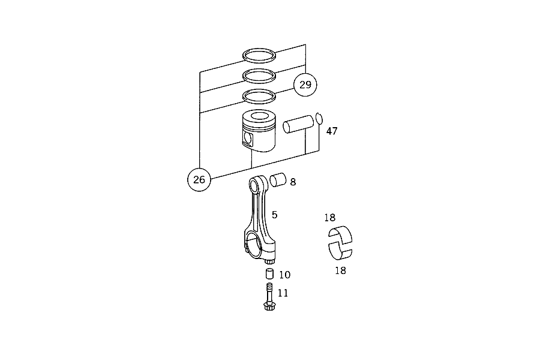

| № | Артикул | Название | Кол. | Примечание |
|---|---|---|---|---|
| 5 | A 102 030 05 20 | ШАТУН | - | |
| 5 | A 102 030 08 20 | Шатун | - | |
| 5 | A 102 030 10 20 | Шатун | - | |
| 5 | A 102 030 24 20 | Шатун | - | |
| 5 | A 102 030 26 20 | Шатун | 6 | |
| 8 | A 102 038 10 50 | - ВТУЛКА ШАТУНА ВЕРХ. | - | |
| 8 | A 111 038 01 50 | - Втулка шатуна | 6 | |
| 8 | A 102 038 11 50 | - ВТУЛКА ШАТУНА ВЕРХ. | - | |
| 10 | A 102 991 03 41 | - Направляющая втулка | 12 | |
| 11 | A 102 038 00 71 | - болт | - | |
| 11 | A 102 038 02 71 | - болт | - | |
| 11 | A 111 038 00 71 | - болт | 12 | |
| 18 | A 103 030 00 60 | ШАТУННЫЙ ПОДШИПНИК | - | |
| 18 | A 103 030 05 60 | ШАТУННЫЙ ПОДШИПНИК | - | |
| 18 | A 102 038 42 10 | Шатунный подшипник | - | |
| 18 | A 111 038 09 10 | Вкладыш шатун. подшипника | 12 | НОРМАЛЬНО 48,00 MM |
| 18 | A 103 030 01 60 | ШАТУННЫЙ ПОДШИПНИК | - | |
| 18 | A 103 030 08 60 | ШАТУННЫЙ ПОДШИПНИК | - | |
| 18 | A 102 038 45 10 | Шатунный подшипник | - | |
| 18 | A 111 038 10 10 | Шатунный подшипник | 12 | РЕМОНТНАЯ ГРУППА I 47,75 MM |
| 18 | A 103 030 02 60 | ШАТУННЫЙ ПОДШИПНИК | - | |
| 18 | A 103 030 09 60 | ШАТУННЫЙ ПОДШИПНИК | - | |
| 18 | A 102 038 46 10 | Шатунный подшипник | - | |
| 18 | A 111 038 11 10 | Шатунный подшипник | 12 | РЕМОНТНАЯ ГРУППА II 47,50 MM |
| 18 | A 103 030 03 60 | ШАТУННЫЙ ПОДШИПНИК | - | |
| 18 | A 103 030 10 60 | ШАТУННЫЙ ПОДШИПНИК | - | |
| 18 | A 102 038 47 10 | Шатунный подшипник | - | |
| 18 | A 111 038 12 10 | Шатунный подшипник | 12 | РЕМОНТ. ГРУППА III 47,25 MM |
| 18 | A 103 030 04 60 | ШАТУННЫЙ ПОДШИПНИК | - | |
| 18 | A 103 030 11 60 | ШАТУННЫЙ ПОДШИПНИК | - | |
| 18 | A 102 038 48 10 | Шатунный подшипник | - | |
| 18 | A 111 038 13 10 | Шатунный подшипник | 12 | РЕМОНТ. ГРУППА IV 47,00 MM |
| 26 | A 103 030 45 17 | ПОРШЕНЬ | - | |
| 26 | A 103 030 49 18 | ПОРШЕНЬ | - | |
| 26 | A 103 030 69 18 | ПОРШЕНЬ | - | |
| 26 | A 103 030 01 18 | ПОРШЕНЬ | - | |
| 26 | A 103 030 37 18 | ПОРШЕНЬ | - | |
| 26 | A 103 030 80 18 | Поршень | - | |
| 26 | A 103 030 20 19 | Поршень | 6 | НОРМАЛЬН.,НЕ ПРИ НИЗК.СТЕП.СЖАТИЯ 88.50 MM |
| 26 | A 103 030 41 17 | ПОРШЕНЬ | - | |
| 26 | A 103 030 53 18 | ПОРШЕНЬ | - | |
| 26 | A 103 030 88 18 | Поршень | 6 | НОРМАЛЬН.,ПРИ НИЗК.СТЕП.СЖАТИЯ,НЕ ДЛЯ СТРАН С НЕЙТРАЛИЗ. ОГ 88.50 MM |
| 26 | A 103 030 46 17 | ПОРШЕНЬ | - | |
| 26 | A 103 030 50 18 | ПОРШЕНЬ | - | |
| 26 | A 103 030 77 18 | ПОРШЕНЬ | - | |
| 26 | A 103 030 02 18 | ПОРШЕНЬ | - | |
| 26 | A 103 030 38 18 | ПОРШЕНЬ | - | |
| 26 | A 103 030 81 18 | ПОРШЕНЬ | - | |
| 26 | A 103 030 21 19 | Поршень | 6 | РЕМ.ГРУППА I,НЕ ПРИ НИЗК.СТЕПЕНИ СЖАТИЯ 89.00 MM |
| 26 | A 103 030 42 17 | ПОРШЕНЬ | - | |
| 26 | A 103 030 54 18 | ПОРШЕНЬ | - | |
| 26 | A 103 030 89 18 | Поршень рем. размера 1 | 6 | РЕМ.ГРУППА I,ПРИ НИЗК.СТЕП.СЖАТИЯ,НЕ ДЛЯ СТРАН С НЕЙТРАЛИЗ. ОГ 89.00 MM |
| 26 | A 103 030 47 17 | ПОРШЕНЬ | - | |
| 26 | A 103 030 51 18 | ПОРШЕНЬ | - | |
| 26 | A 103 030 78 18 | ПОРШЕНЬ | - | |
| 26 | A 103 030 03 18 | ПОРШЕНЬ | - | |
| 26 | A 103 030 39 18 | ПОРШЕНЬ | - | |
| 26 | A 103 030 82 18 | ПОРШЕНЬ | - | |
| 26 | A 103 030 22 19 | Поршень | 6 | РЕМ.ГРУППА II,НЕ ПРИ НИЗК.СТЕПЕНИ СЖАТИЯ 89.50 MM |
| 26 | A 103 030 43 17 | ПОРШЕНЬ | - | |
| 26 | A 103 030 55 18 | ПОРШЕНЬ | - | |
| 26 | A 103 030 90 18 | Поршень | 6 | РЕМ.ГРУППА II,ПРИ НИЗК.СТЕП.СЖАТИЯ,НЕ ДЛЯ СТРАН ОГ 89.50 MM |
| 29 | A 001 030 82 24 | - КОЛЬЦО ПОРШНЕВОЕ | - | |
| 29 | A 002 030 40 24 | - Комплект поршневых колец | 6 | КОМПЛЕКТ ДЕТАЛЕЙ, НОРМАЛЬН. TO 103 030 53 17,69 18,80 18 |
| 29 | A 001 030 83 24 | - КОЛЬЦО ПОРШНЕВОЕ | - | |
| 29 | A 002 030 41 24 | - Комплект поршневых колец | 6 | КОМПЛЕКТ ДЕТАЛЕЙ, РЕМ. РАЗМЕР I TO 103 030 54 17,77 18,81 18 |
| 29 | A 001 030 84 24 | - КОЛЬЦО ПОРШНЕВОЕ | - | |
| 29 | A 002 030 42 24 | - Комплект поршневых колец | 6 | КОМПЛЕКТ ДЕТАЛЕЙ, РЕМ. РАЗМЕР II TO 103 030 55 17,78 18,82 18 |
| 29 | A 003 030 04 24 | - Комплект поршневых колец | 6 | КОМПЛЕКТ ДЕТАЛЕЙ, РЕМ. РАЗМЕР II TO 103 030 18 19,22 19 |
| 47 | A 102 994 01 35 | - Пруж. стопорное кольцо | 12 |
Позиций: 70 · подписано на схемах: 70 · колесо — плавный зум в курсор, перетаскивание — пан, двойной клик — зум, клик по артикулу — скопировать.